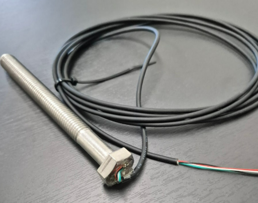
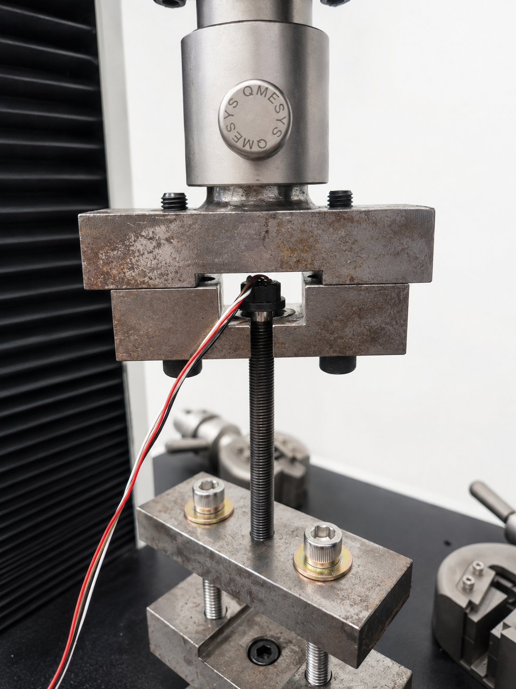

토크 렌치로는 해결할 수 없는 볼트 체결력(축력)의 직접 측정 방법을 상세히 설명합니다. 풀브릿지 외부 부착형·중심홀 삽입형·와셔형 포스센서 3가지 방식을 비교하고, 제작 4단계 공정과 볼트 규격별 선택 기준을 제시합니다.

볼트를 조이면 볼트가 신장(Elongation)되고 이 탄성 변형이 인장력, 즉 축력(Axial Load)을 만들어 냅니다. 이 축력이 바로 체결 구조물을 조이고 있는 실질적 힘입니다.
볼트에 스트레인게이지를 부착하면 스트레인(ε = δ/L)을 직접 측정하고, F = E × A × ε 공식으로 실시간 축력을 계산할 수 있습니다. 토크와 달리 마찰 계수의 영향을 받지 않아 정확도가 높습니다.
볼트를 조였을 때 볼트 축 방향으로 발생하는 인장력 (단위: kN, kgf). 피체결체 간 압축 체결력과 크기가 동일합니다.
볼트 축력이 피체결체 사이에 전달되는 압축력. 볼트 축력 = 체결력이며, 플랜지 기밀성·마찰력 확보에 직접 영향을 줍니다.
볼트에 반복 하중이 가해질 때 파단을 일으키는 응력 범위. 동적 하중 환경에서는 실제 축력을 알아야 피로수명 예측이 가능합니다.
진동·충격으로 볼트 축력이 감소하는 현상. 축력 모니터링 시스템으로 일정 수준 이하로 감소 시 알람을 발생시킬 수 있습니다.
조임 토크(T)의 에너지는 나사산 마찰, 시트면 마찰, 볼트 신장 3가지로 분산됩니다. 이 중 실제 축력으로 전환되는 비율이 윤활 상태·재질·온도 등 현장 조건마다 달라지기 때문에 토크만으로는 정확한 축력 관리가 어렵습니다.
같은 볼트에 같은 토크를 가해도 아래 요인에 따라 축력이 크게 달라집니다:
스트레인게이지는 볼트 자체의 변형(Strain)을 직접 측정하므로 마찰 계수 변동의 영향을 받지 않습니다:
→ 측정 정밀도: ±1~2% F.S.
현장 볼트의 규격, 설치 공간, 측정 목적에 따라 최적의 방식을 선택합니다. 씨앤디테크는 3가지 방식 모두 커스텀 제작·교정 서비스를 제공합니다.
| 비교 항목 | ① 풀브릿지 외부 부착형 | ② 중심홀 삽입형 | ③ 와셔형 포스센서 |
|---|---|---|---|
| 볼트 가공 여부 | 외면 면·홀 가공 | 중심홀 가공 | 볼트 무가공 |
| 적합 볼트 규격 | M10 이상 (모든 규격) | M8 이하 소형 / 협소 공간 | M8 이상 (와셔 설치 공간 필요) |
| 측정 정밀도 | ±1~2% F.S. | ±1~3% F.S. | ±1~5% F.S. |
| 외부 공간 필요 | 중간 (게이지 부착 면 필요) | 최소 (내부 매립) | 필요 (와셔 두께 추가) |
| 볼트 재사용 | 제한적 | 제한적 | 탈착 후 재사용 가능 |
| 환경 내구성 | 에폭시 몰딩으로 IP67 | 내부 매립, 최고 내구성 | 완성품 IP등급 따름 |
| 초기 비용 | 낮음 | 중간 | 높음 (HBM 등 완성품) |
| 다채널 설치 용이성 | 우수 | 우수 | 중간 |
| 대표 적용 | 교량 앵커볼트, 풍력 기초, 중하중 구조체결 | 소형 기계, 협소 공간, 가혹 환경 | 다부위 교차 계측, 임시 점검 |
볼트 외면에 4개의 스트레인게이지를 배치하여 풀 브릿지 회로를 구성합니다. 2축 방향으로 게이지를 배열하면 굽힘 응력(Bending Stress)이 상쇄되어 순수 인장 하중만 정밀하게 계측됩니다. 온도 변화에 의한 영점 드리프트도 브릿지 회로가 자동으로 보상합니다.

볼트 중심축을 따라 미세한 홀을 가공하고 원통형 스트레인게이지를 삽입 후 2액형 특수 접착제로 고정합니다. 센서가 볼트 내부에 완전히 매립되어 외부 충격·오염으로부터 보호됩니다. 외부 공간이 극도로 제한된 환경에서도 적용이 가능합니다.
풀브릿지 외부 부착형 기준 제작 공정입니다. 씨앤디테크는 볼트 가공부터 교정 성적서 납품까지 일괄 처리합니다.


볼트 외면을 정밀 면 가공하여 부착면을 확보합니다. 4개의 스트레인게이지를 풀브릿지 배열로 부착하고 전용 접착제로 고정 후 양생합니다. 게이지 간격과 각도가 측정 정밀도를 결정합니다.


4개의 게이지 리드선을 풀브릿지 회로로 납땜 결선합니다. 신호 케이블은 4심 또는 6심 차폐 케이블을 사용하며, 고온·방수 환경에 따라 특수 케이블과 커넥터를 적용합니다.


스트레인게이지와 결선부 전체를 에폭시 수지로 몰딩합니다. 몰딩은 방수·방진(IP67 이상), 물리적 충격 보호, 전기 절연 기능을 동시에 제공합니다. 경화 후 표면을 마감 처리합니다.

만능 재료 시험기(UTM)로 교정 하중을 인가하고 출력/축력 교정 곡선을 작성합니다. 교정 성적서와 함께 최종 납품합니다. 씨앤디테크는 제작부터 교정까지 일괄 제공합니다.


삽입형은 볼트 중심에 홀을 가공하고 원통형 게이지를 삽입합니다. 외부 공간이 없는 협소 환경, M8 이하 소형 볼트, 회전 기계 적용 시 선택합니다.
아래 표를 참고하여 적용 볼트 규격에 맞는 방식을 선택하세요. ◎ = 최적 추천 / ○ = 적용 가능 / — = 비적합.
| 볼트 규격 / 조건 | 풀브릿지 외부 부착형 | 중심홀 삽입형 | 와셔형 포스센서 |
|---|---|---|---|
| M5 이하 초소형 | — | ◎ 최적 | — |
| M6 ~ M8 소형 | ○ 가능 (면적 제한) | ◎ 최적 | ○ 가능 |
| M10 ~ M24 중형 | ◎ 최적 | ○ 가능 | ◎ 최적 |
| M30 이상 대형 | ◎ 최적 | ○ 가능 | ○ 가능 |
| 외부 공간 협소 | ○ 제한적 | ◎ 최적 (내부 매립) | — (공간 필요) |
| 원본 볼트 보존 | — | — | ◎ 최적 |
| 다채널 장기 모니터링 | ◎ 최적 | ◎ 최적 | ○ 가능 |
| 고온 환경 (150°C 이상) | ○ 고온 SG 선택 시 | ◎ 최적 (내부 보호) | ○ 완성품 온도 사양 확인 |
| 방수 필요 (IP67 이상) | ◎ 에폭시 몰딩 처리 | ◎ 내부 매립 + 케이블 실링 | ○ 완성품 IP등급 확인 |
볼트 체결 신뢰성이 구조 안전과 직결되는 모든 분야에 적용됩니다.
교량 앵커볼트, 인장재, 교각 연결부 체결력 장기 모니터링. 볼트 풀림 경보 시스템 구축.
플랜지 체결 밀봉력 관리, 선체 구조 볼트 체결력 검증. 진동·충격 환경 내구성 요구.
원자력 압력용기 스터드볼트, 풍력 타워 기초 앵커볼트, 가스터빈 플랜지 체결.
엔진·변속기 체결 시험, 섀시 구조 볼트 피로 평가. 양산 체결 공정 검증.
크레인·호이스트 구조 볼트, 압력용기·반응기 플랜지, 고압 배관 연결부.
반도체 장비 고정 볼트 미소 체결력 관리, 정밀 가공 설비 체결 균일성 검증.
센서 제작에서 현장 분석 보고서까지 — 씨앤디테크는 볼트 체결력 문제를 엔지니어링 관점에서 처음부터 끝까지 해결합니다.
고객 볼트 규격 기반 3가지 방식 맞춤 제작
UTM 기반 교정 곡선 작성, 성적서 제공
다채널 데이터로거, 포터블 인디케이터, 무선 텔레메트리
전문 엔지니어 현장 설치·측정·트러블슈팅
측정 데이터 분석, 체결 상태 판정, 개선 제안
씨앤디테크에 자주 접수되는 볼트 축력 측정 관련 질문을 정리했습니다.
볼트 규격과 적용 환경을 알려주시면, 풀브릿지 부착형·삽입형·와셔형 중 최적의 방식과 예상 견적을 안내해 드립니다. 설계부터 교정·납품·현장 서비스까지 씨앤디테크가 일괄 지원합니다.
관련 기술자료 더 보기 → 스트레인게이지 기초 · 게이지 부착 기술 · 잔류응력 측정 · DAQ 시스템